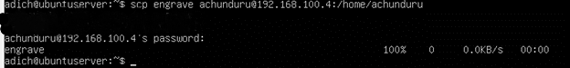
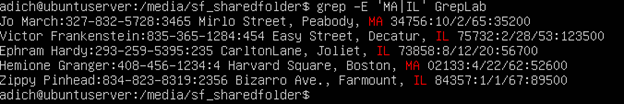
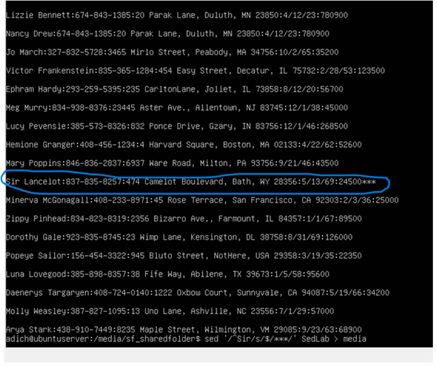

In my linux admin class, I had to not only show how to install a server and write
documentation about it, I also had to do this thing called SCP to share files between 2 virtualized linux servers.
As such, VirtualBox has been the basis for this whole class. Not to mention, I never knew you could do this with linux.

Using grep to do different things
One of the things i also did as part of my class is using grep to do different things, one of which is printing lines where people only live in certain states.
Grep is a type of linux tool that I would like to practice with more.

Using Sed to perform different stuff
I also used sed to perform different things, I'm not exactly sure or aware of the
discrepancies that exist with sed.

Using awk to also do different stuff
This is where i start to actually notice the disrepancies more between the other 2 power tools.
Awk is where you learn about the existance of field separators which by default are separated by spaces.
This means that when you don't specify a field separator, awk will assume that any spaces or tabs are field separators.
For example, in the screenshot you see below, if you tell awk to print $1 with the AwkLab.data file,
you only get the first names for example in the screenshot above that output would just be Samuel, Ponder, Angua and so on.
Now if you change the field separator to colon for example and then tell awk to print $1, you would get both first and last names in the output
For example, here is a screenshot showing an output leaving the field separator as is.Here is an example of an output with a modified FS
Some other interesting things i found with working with Linux
As part of this class, I had to use 2 different virtualized linux servers
I noticed some more disrepancies, mainly when it came to how you install certain packages on your server.
I find it very interesting how on ubuntu, your arguement is "sudo apt-get install cowsay" for example.
On centOS on another hand, it's "sudo yum install". Basically, my point is that different virtual linux servers have certain discrepancies and what you see on the two screenshots are good examples of those.
In case of any questions,apt-get means that the server is Ubuntu and yum install shows that the server is CentOS
As such, this is how you would know which server is which.